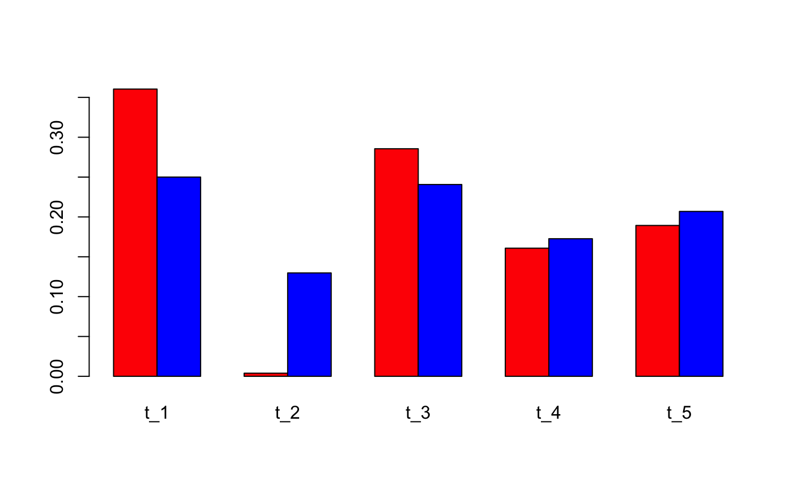

Fit a Latent Dirichlet Allocation topic model using collapsed Gibbs sampling.
FitLdaModel(
dtm,
k,
iterations = NULL,
burnin = -1,
alpha = 0.1,
beta = 0.05,
optimize_alpha = FALSE,
calc_likelihood = FALSE,
calc_coherence = TRUE,
calc_r2 = FALSE,
...
)A document term matrix or term co-occurrence matrix of class dgCMatrix
Integer number of topics
Integer number of iterations for the Gibbs sampler to run. A future version may include automatic stopping criteria.
Integer number of burnin iterations. If burnin is greater than -1,
the resulting "phi" and "theta" matrices are an average over all iterations
greater than burnin.
Vector of length k for asymmetric or a number for symmetric.
This is the prior for topics over documents
Vector of length ncol(dtm) for asymmetric or a number for symmetric.
This is the prior for words over topics.
Logical. Do you want to optimize alpha every 10 Gibbs iterations?
Defaults to FALSE.
Do you want to calculate the likelihood every 10 Gibbs iterations?
Useful for assessing convergence. Defaults to FALSE.
Do you want to calculate probabilistic coherence of topics
after the model is trained? Defaults to TRUE.
Do you want to calculate R-squared after the model is trained?
Defaults to FALSE.
Other arguments to be passed to TmParallelApply
Returns an S3 object of class c("LDA", "TopicModel"). DESCRIBE MORE
EXPLAIN IMPLEMENTATION DETAILS
# load some data
data(nih_sample_dtm)
# fit a model
set.seed(12345)
m <- FitLdaModel(dtm = nih_sample_dtm[1:20,], k = 5,
iterations = 200, burnin = 175)
str(m)
#> List of 7
#> $ phi : num [1:5, 1:5210] 5.77e-05 6.69e-05 5.73e-05 6.69e-05 5.28e-05 ...
#> ..- attr(*, "dimnames")=List of 2
#> .. ..$ : chr [1:5] "t_1" "t_2" "t_3" "t_4" ...
#> .. ..$ : chr [1:5210] "folding" "tosuprttedprtmnt" "importation" "hd" ...
#> $ theta : num [1:20, 1:5] 0.00043 0.23802 0.111462 0.210652 0.000615 ...
#> ..- attr(*, "dimnames")=List of 2
#> .. ..$ : chr [1:20] "8693991" "8693362" "8607498" "8697008" ...
#> .. ..$ : chr [1:5] "t_1" "t_2" "t_3" "t_4" ...
#> $ gamma : num [1:5, 1:5210] 0.188 0.19 0.207 0.206 0.209 ...
#> ..- attr(*, "dimnames")=List of 2
#> .. ..$ : chr [1:5] "t_1" "t_2" "t_3" "t_4" ...
#> .. ..$ : chr [1:5210] "folding" "tosuprttedprtmnt" "importation" "hd" ...
#> $ data :Formal class 'dgCMatrix' [package "Matrix"] with 6 slots
#> .. ..@ i : int [1:2864] 13 16 11 16 18 10 11 11 17 11 ...
#> .. ..@ p : int [1:5211] 0 0 0 0 1 1 2 2 2 2 ...
#> .. ..@ Dim : int [1:2] 20 5210
#> .. ..@ Dimnames:List of 2
#> .. .. ..$ : chr [1:20] "8693991" "8693362" "8607498" "8697008" ...
#> .. .. ..$ : chr [1:5210] "folding" "tosuprttedprtmnt" "importation" "hd" ...
#> .. ..@ x : num [1:2864] 1 1 1 1 1 1 1 1 1 1 ...
#> .. ..@ factors : list()
#> $ alpha : Named num [1:5] 0.1 0.1 0.1 0.1 0.1
#> ..- attr(*, "names")= chr [1:5] "t_1" "t_2" "t_3" "t_4" ...
#> $ beta : Named num [1:5210] 0.05 0.05 0.05 0.05 0.05 0.05 0.05 0.05 0.05 0.05 ...
#> ..- attr(*, "names")= chr [1:5210] "folding" "tosuprttedprtmnt" "importation" "hd" ...
#> $ coherence: Named num [1:5] 0.0817 0.395 0.24 0.0267 0.04
#> ..- attr(*, "names")= chr [1:5] "t_1" "t_2" "t_3" "t_4" ...
#> - attr(*, "class")= chr "lda_topic_model"
# predict on held-out documents using gibbs sampling "fold in"
p1 <- predict(m, nih_sample_dtm[21:100,], method = "gibbs",
iterations = 200, burnin = 175)
# predict on held-out documents using the dot product method
p2 <- predict(m, nih_sample_dtm[21:100,], method = "dot")
# compare the methods
barplot(rbind(p1[1,],p2[1,]), beside = TRUE, col = c("red", "blue"))
